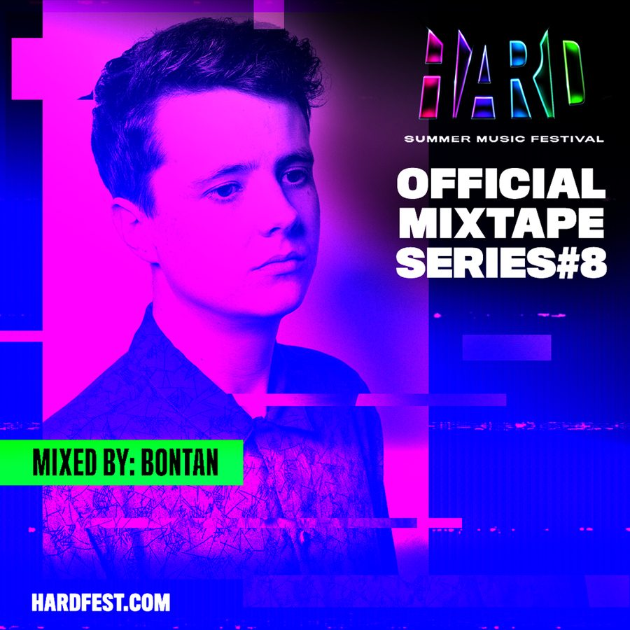

Bontan Showcases His Formidable Tech House on HARD Summer 2018 Mixtape


Bontan is the very definition of a rising tech house star. The UK producer is part of the next generation of names who, though still in the earlier stages of appearing on festival lineups around the world, will definitely be familiar to those keeping their eyes on the Beatport charts.
Take a look, for instance, at his breakthrough remix of Josh Butler’s “Got a Feeling” from 2013—a bumpy, irresistible dancefloor destroyer that hardly went unnoticed. In fact, it was Beatport’s biggest selling track for the year and, incredibly, one of the biggest sellers ever on the platform.
As a producer who says he prefers a slow and steady climb to success—rather than an overnight explosion that risks a quick burnout—five years after that first breakthrough smash, Bontan is just about ready to make his debut at HARD Summer in August, after having already had the chance to dip his toes in the US scene via several earlier Stateside tours.
However, it’s also been a rocking and eventful ride to get there. With releases on the likes of Suara and Hot Creations, it’s almost like he’s ticking off all the major house music stables, one by one. His current home is Yousef’s Circus Music, which he says feels just like home.
To get the tech house heads in the party mood as HARD Summer draws near, Bontan has prepared a special mixtape, which he paints as “a representation of both me as a producer, as well as how I like to build my DJ sets, all squashed down into a mix.”
Here is Bontan himself to tell us more and help get us prepped for summer.
I understand you’re on tour in Australia at the moment. How is your year going so far?
2018 has been pretty mental so far. It’s the most I’ve ever toured in my life, but I’m loving every second of it.
For those not familiar with your music, tell us a little about the Bontan journey so far.
I broke onto the house scene around four years ago now. A remix I did for my friend Josh Butler was a Beatport #1 for months, which gained me a fair amount of attention quite quickly. I always felt I wanted a consistent and steady rise in my career, rather than overnight success followed by a rapid downfall, so I tried to forge my career in that sense.
I was awarded the honor of my debut Essential Mix on BBC Radio 1 in December last year, which was one of the proudest achievements of my career. My key releases in recent years have been on Hot Creations, Circus, and Origins.
How did you get the attention of those record labels, and how have these associations impacted your career?
With Circus being a local party in the UK, as well as being a truly global label, I found myself at these parties on a regular basis. I became good friends with the label boss, Yousef, and in the process also discovered that Circus was the perfect home for my music.
Hot Creations has had a huge impact on my career. It cracked my career open wide to a global audience, which is a priceless tool! There’s such a great family energy at the label, too.
You’ve already got a collab with Yousef under your belt, plus another one coming up. Have you guys struck up some good chemistry in the studio together?
Yeah, we have a new record coming out soon on his label, Circus. It’s a ripper! For this track, we worked remotely. I’d send stems, and Yousef would work on it at his studio before sending them back. It was a quick and efficient way to work this time, as we’re both away touring so much. In general, we have really good chemistry—we’ve become really good friends.
You’re a UK producer, and you’ve definitely left your mark on your country’s house scene the past few years. For your fans in the US, tell us a bit what it’s like over there.
The UK house scene is constantly evolving and pushing fresh sounds forward. Every small town in the UK has quality underground house events, which means we’re spoiled!
You’ve obviously had the chance to visit and play in the US the past few years. What have your impressions been on your visits so far?
I love playing in the US. Some of my favorite shows have been there—especially in Miami, New York, and L.A. The people here are so accepting and willing to be taken on a journey when I play, so I can take risks with my DJ sets instead of playing it safe, which is exactly what I like!
Tracey “Earthrise”
Kiki “Good Voodoo” (Visionquest Vocal)
Ki Creighton “Love Is Here” (Dub Edit)
Booka Shade “Confessions” (Bontan Remix)
Jesse Perez “Never Talk to Aliens”
Todd Terry “Make It Right”
Melé “Tribal Layers” (Bontan Remix)
Josh Butler “Doesn’t Work”
Argy “The Numbers”
Nasser Baker “Say Something”
Josh Butler “Anonymous”
Ben Sterling “Ciao”
HARD Summer 2018 takes place Saturday, August 4, and Sunday, August 5, at the Speedway in Fontana, CA. Tickets go on sale now. For more information, visit the official website.
Follow Bontan on Facebook | Twitter | SoundCloud
Follow HARD Summer on Facebook | Twitter | Instagram | SoundCloud